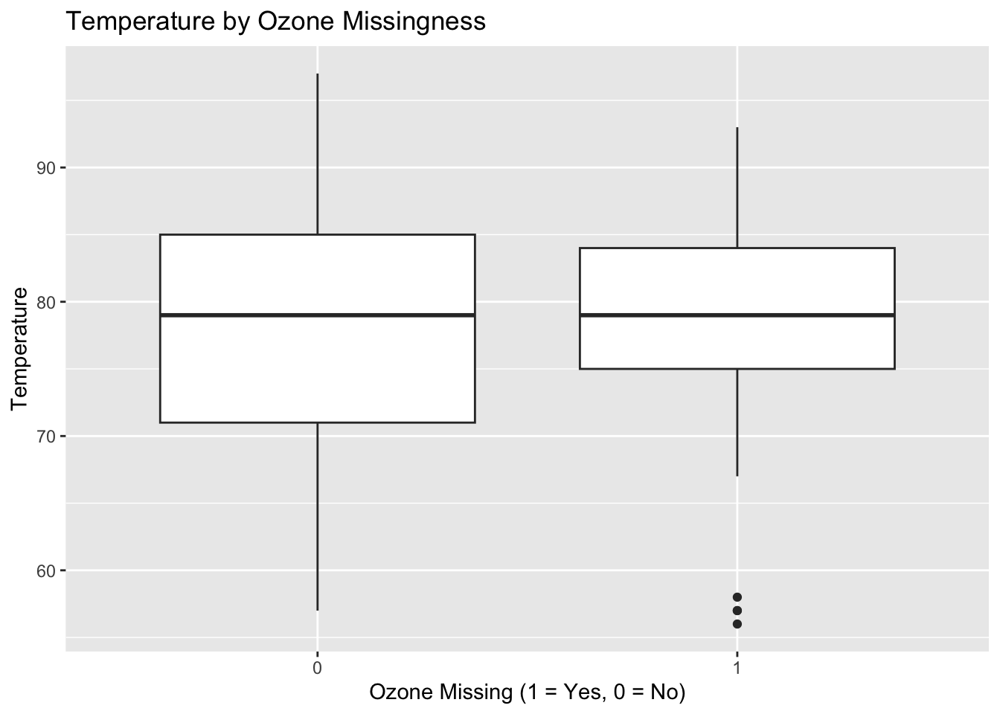
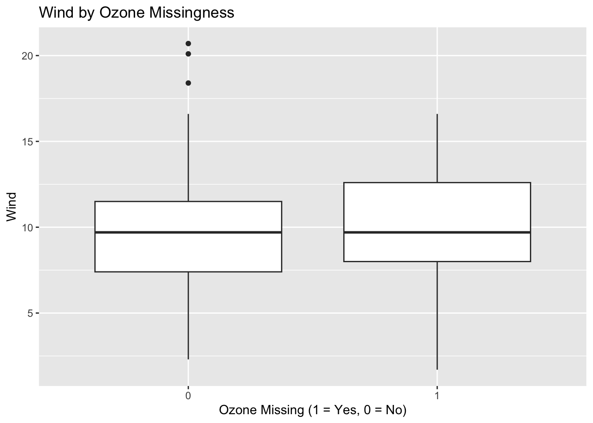
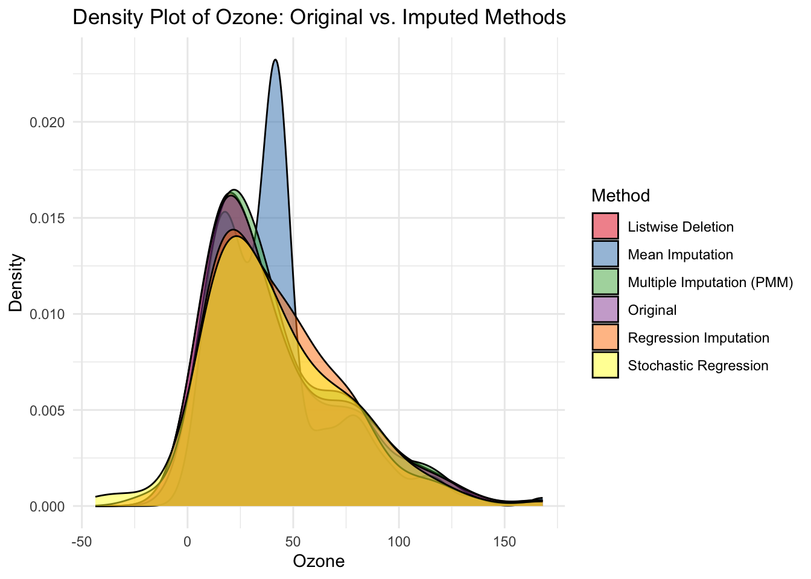
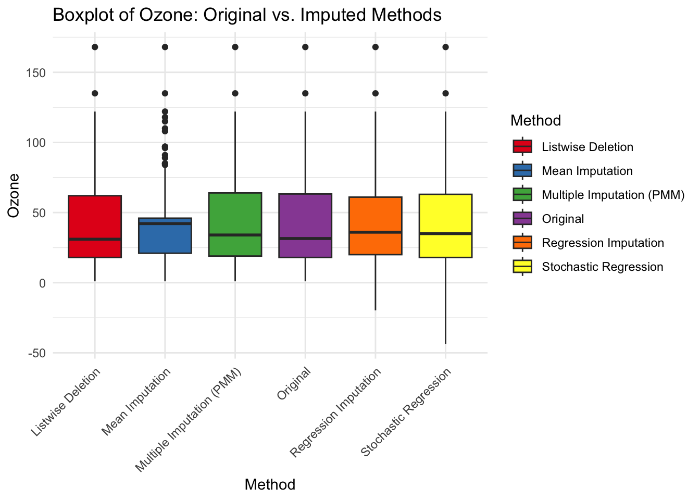

Code
#load packages
library(skimr)
library(naniar)
library(tidyverse)
library(mice)Missing data is a common problem and dealing with it appropriately is extremely important. Ignoring the missing data points or filling them incorrectly may cause the models to work in unexpected ways and cause the predictions and inferences to be biased.
Le’ts consider built-in dataset ‘airquality’ in R as a sample dataset.
| Name | airquality |
| Number of rows | 153 |
| Number of columns | 6 |
| _______________________ | |
| Column type frequency: | |
| numeric | 6 |
| ________________________ | |
| Group variables | None |
Variable type: numeric
| skim_variable | n_missing | complete_rate | mean | sd | p0 | p25 | p50 | p75 | p100 | hist |
|---|---|---|---|---|---|---|---|---|---|---|
| Ozone | 37 | 0.76 | 42.13 | 32.99 | 1.0 | 18.00 | 31.5 | 63.25 | 168.0 | ▇▃▂▁▁ |
| Solar.R | 7 | 0.95 | 185.93 | 90.06 | 7.0 | 115.75 | 205.0 | 258.75 | 334.0 | ▅▃▅▇▅ |
| Wind | 0 | 1.00 | 9.96 | 3.52 | 1.7 | 7.40 | 9.7 | 11.50 | 20.7 | ▂▇▇▃▁ |
| Temp | 0 | 1.00 | 77.88 | 9.47 | 56.0 | 72.00 | 79.0 | 85.00 | 97.0 | ▂▃▇▇▃ |
| Month | 0 | 1.00 | 6.99 | 1.42 | 5.0 | 6.00 | 7.0 | 8.00 | 9.0 | ▇▇▇▇▇ |
| Day | 0 | 1.00 | 15.80 | 8.86 | 1.0 | 8.00 | 16.0 | 23.00 | 31.0 | ▇▇▇▇▆ |
From the visualization, it appears that missing data is not completely random (MCAR) as some variables (like Ozone and Solar.R) have more missing values than others. It might be MAR (Missing at Random) if missingness in Ozone is related to other variables like Temp or Wind.
# A tibble: 1 × 4
statistic df p.value missing.patterns
<dbl> <dbl> <dbl> <int>
1 35.1 14 0.00142 4Little’s MCAR test on the airquality dataset yielded a chi-square of 35.11 (df = 14) with a p-value of 0.001418, which is statistically significant. This result means we can reject the null hypothesis that the missing data is Missing Completely At Random (MCAR), suggesting that missingness is likely related to either observed variables (MAR) or the unobserved values themselves (MNAR).
Creating a binary indicator for missingness allows you to test whether the presence of missing data is related to observed data.
# Create binary indicator for Ozone missingness
airquality$miss_ozone <- as.factor(ifelse(is.na(airquality$Ozone), 1, 0))
# Create binary indicator for Solar.R missingness
airquality$miss_solar <- as.factor(ifelse(is.na(airquality$Solar.R), 1, 0))
# T-test to see if Wind values differ between records with missing vs. non-missing Ozone
t.test(Wind ~ miss_ozone, data = airquality)
Welch Two Sample t-test
data: Wind by miss_ozone
t = -0.60911, df = 63.646, p-value = 0.5446
alternative hypothesis: true difference in means between group 0 and group 1 is not equal to 0
95 percent confidence interval:
-1.6893132 0.8999377
sample estimates:
mean in group 0 mean in group 1
9.862069 10.256757
Welch Two Sample t-test
data: Temp by miss_ozone
t = -0.026831, df = 60.447, p-value = 0.9787
alternative hypothesis: true difference in means between group 0 and group 1 is not equal to 0
95 percent confidence interval:
-3.643306 3.546847
sample estimates:
mean in group 0 mean in group 1
77.87069 77.91892
Welch Two Sample t-test
data: Wind by miss_solar
t = 0.65629, df = 6.4571, p-value = 0.5343
alternative hypothesis: true difference in means between group 0 and group 1 is not equal to 0
95 percent confidence interval:
-2.674488 4.681338
sample estimates:
mean in group 0 mean in group 1
10.00342 9.00000
Welch Two Sample t-test
data: Temp by miss_solar
t = 0.98706, df = 6.2689, p-value = 0.3602
alternative hypothesis: true difference in means between group 0 and group 1 is not equal to 0
95 percent confidence interval:
-7.436381 17.669258
sample estimates:
mean in group 0 mean in group 1
78.11644 73.00000 

Create new and appropriately named datasets that are based on airquality for each of the following ways of fixing the dataset:
- (a) "listwise deletion" or "complete case analysis" --- where entire records from the analysis are removed if they are missing any data point in one or more variables
- (b) Imputation with mean --- involves filling in the missing values with the mean of the available values in the same variable.
- (c) Imputation with regression (use mice package)
- (d) Imputation with stochastic regression (use mice package)
- (e) Imputation with multiple induction (use mice package, 5 imputations, and Predictive mean matching method)[1] "153 → 111"# (b) Imputation with mean
airquality_mean <- airquality
airquality_mean$Ozone[is.na(airquality_mean$Ozone)] <- mean(airquality_mean$Ozone, na.rm = TRUE)
airquality_mean$Solar.R[is.na(airquality_mean$Solar.R)] <- mean(airquality_mean$Solar.R, na.rm = TRUE)
# (c) Imputation with regression using mice
set.seed(123)
imp_reg <- mice(airquality, method = "norm.predict", m = 1)
iter imp variable
1 1 Ozone Solar.R
2 1 Ozone Solar.R
3 1 Ozone Solar.R
4 1 Ozone Solar.R
5 1 Ozone Solar.R
iter imp variable
1 1 Ozone Solar.R
2 1 Ozone Solar.R
3 1 Ozone Solar.R
4 1 Ozone Solar.R
5 1 Ozone Solar.R
iter imp variable
1 1 Ozone Solar.R
1 2 Ozone Solar.R
1 3 Ozone Solar.R
1 4 Ozone Solar.R
1 5 Ozone Solar.R
2 1 Ozone Solar.R
2 2 Ozone Solar.R
2 3 Ozone Solar.R
2 4 Ozone Solar.R
2 5 Ozone Solar.R
3 1 Ozone Solar.R
3 2 Ozone Solar.R
3 3 Ozone Solar.R
3 4 Ozone Solar.R
3 5 Ozone Solar.R
4 1 Ozone Solar.R
4 2 Ozone Solar.R
4 3 Ozone Solar.R
4 4 Ozone Solar.R
4 5 Ozone Solar.R
5 1 Ozone Solar.R
5 2 Ozone Solar.R
5 3 Ozone Solar.R
5 4 Ozone Solar.R
5 5 Ozone Solar.RClass: mids
Number of multiple imputations: 5
Imputation methods:
Ozone Solar.R Wind Temp Month Day miss_ozone
"pmm" "pmm" "" "" "" "" ""
miss_solar
""
PredictorMatrix:
Ozone Solar.R Wind Temp Month Day miss_ozone miss_solar
Ozone 0 1 1 1 1 1 1 1
Solar.R 1 0 1 1 1 1 1 1
Wind 1 1 0 1 1 1 1 1
Temp 1 1 1 0 1 1 1 1
Month 1 1 1 1 0 1 1 1
Day 1 1 1 1 1 0 1 1
Number of logged events: 50
it im dep meth out
1 1 1 Ozone pmm miss_ozone1
2 1 1 Solar.R pmm miss_solar1
3 1 2 Ozone pmm miss_ozone1
4 1 2 Solar.R pmm miss_solar1
5 1 3 Ozone pmm miss_ozone1
6 1 3 Solar.R pmm miss_solar1Compare the eventual distribution from these datasets on the variable ’Ozone’against the orgiinal. Below is a template that considers only 2 datasets but please consider all the datasets you generated within a single plot
# ggplot(airquality, aes(x=Ozone, fill="Original")) +
# geom_density(alpha=0.5) +
# geom_density(data=dataset_listwise_deletion, aes(x=Ozone, fill="Listwise Deletion"), alpha=0.5) +
# labs(title="Density Plot of Ozone: Original vs. Imputed")
# Create a combined dataframe for plotting
ozone_original <- airquality %>%
select(Ozone) %>%
mutate(Method = "Original") %>%
filter(!is.na(Ozone))
ozone_listwise <- airquality_listwise %>%
select(Ozone) %>%
mutate(Method = "Listwise Deletion")
ozone_mean <- airquality_mean %>%
select(Ozone) %>%
mutate(Method = "Mean Imputation")
ozone_reg <- airquality_reg %>%
select(Ozone) %>%
mutate(Method = "Regression Imputation")
ozone_stoch_reg <- airquality_stoch_reg %>%
select(Ozone) %>%
mutate(Method = "Stochastic Regression")
ozone_mi <- airquality_mi %>%
select(Ozone) %>%
mutate(Method = "Multiple Imputation (PMM)")
# Combine all datasets
all_ozone <- bind_rows(ozone_original, ozone_listwise, ozone_mean, ozone_reg, ozone_stoch_reg, ozone_mi)
ggplot(all_ozone, aes(x = Ozone, fill = Method)) +
geom_density(alpha = 0.5) +
labs(title = "Density Plot of Ozone: Original vs. Imputed Methods",
x = "Ozone",
y = "Density") +
theme_minimal() +
scale_fill_brewer(palette = "Set1")

What do you observe?
The density plot and boxplot comparisons of the ‘Ozone’ variable across different imputation methods reveal significant differences in how each method handles missing data: - The original data (excluding missing values) shows a natural distribution of ‘Ozone’ values. - Listwise deletion retains the original distribution but reduces the sample size. - Mean imputation creates an artificial peak at the mean value, which distorts the natural distribution and underestimating variance. - Regression imputation preserves the general shape of the distribution but doesn’t capture the full variability of the data. - Stochastic regression imputation adds random noise to the regression predictions, which helps to better represent the variability in the data compared to regular regression imputation. - Multiple imputation with PMM appears to best preserve the original distribution’s shape while filling in missing values, as it samples from observed values that are similar to the predicted values for missing data points.
The key takeaway is that different imputation methods can significantly impact the distribution of the data. Methods like mean imputation can distort the distribution, while more sophisticated methods like PMM better preserve the original distribution’s properties. The choice of imputation method should consider how well it preserves the distribution and relationships between variables in the dataset.